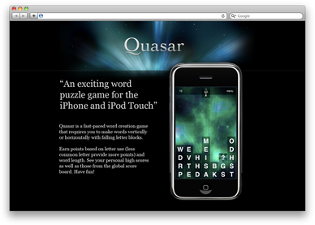

Projects
Kite Compositor
kiteapp.co
Kite is a fully featured animation design and prototyping application for the Mac and iOS.
It features an intuitive WYSIWYG canvas interface with a powerful timeline editor. The built-in scripting engine allows you to tweak your interactions with custom logic.
The companion iOS app lets you to view your Kite documents right on your iPhone or iPad.
{kind=link}
IconFinder
IconFinder searches your Mac for several different types of image files and gives you an easy way to browse them in a grid.
Double-click an icon to open it in Preview.
The search field filters through the absolute paths of the images on your file system to help narrow down the results.
It comes in handy when mocking up a new interface and you need nice icons to use as temporary placeholders.
{kind=link}
{kind=link}
Quasar
Quasar is was a fast-paced word creation game that requires you to make words vertically or horizontally with falling letter blocks.
Earn points based on letter use (less common letters provide more points) and word length. See your personal high scores as well as those from the global score board.
The app started as a project in a game programming class at UGA. It was originally released on the App Store in 2009. It is no longer available.
{kind=link}
An exciting word puzzle game for the iPhone and iPod Touch
BurnRate
A native Mac calendar-based finance tracking app that I built for personal use.
Import your transaction history from propular bank websites like Wells Fargo and Bank of America with built-in QFX support. Catagorize and comment on your transactions.
View your account history in the monthly calendar view to see a week-by-week spend rate and year-to-date balance. Switch to the ledger view to see a table of all of your transactions.
{kind=link}